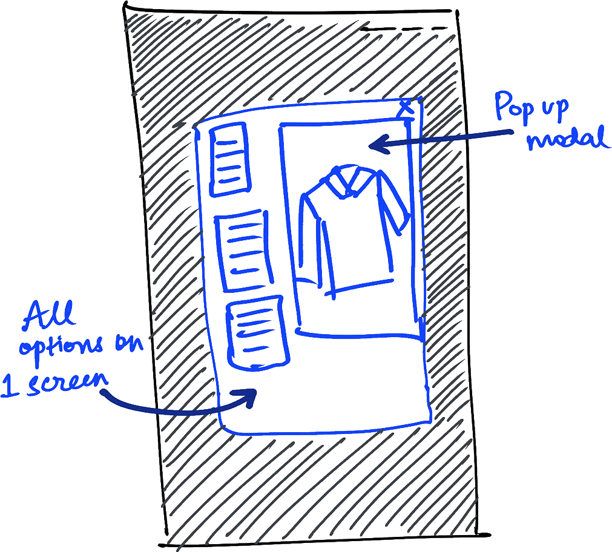
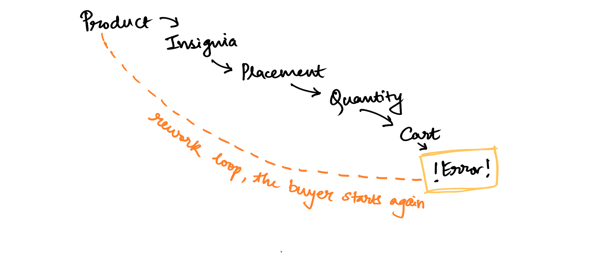
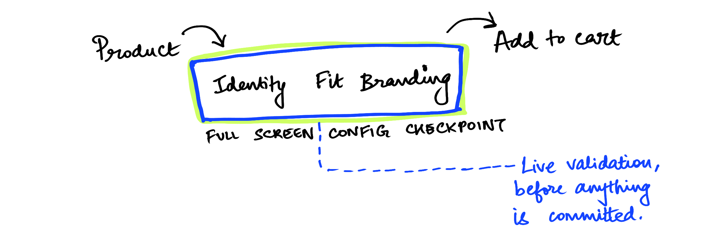

uniform customizer
galls
uniform configuration, collapsed into one screen
Agency compliance rules, embroidery logic and placement standards for U.S. Army and Air Force buyers were spread across several pages. Buyers had to commit to choices before they could see the result. We pulled the whole configuration into one screen.

- my role
- UX strategy & system architectureInteraction design & prototyping
- team
- 1 head of design3 engineers1 UX designer (me)
- users
- U.S. ArmyU.S. Air Force procurement
- status
- Live on Galls.comOngoing since Feb 2025
two quarters after launch
+22%
more orders included customisation
26%
faster to configure an order
+17%
more customisable orders reached checkout
MEASURED. Production analytics, comparing the two quarters after launch against the two before, on the same product set.
this was never a customization feature
Galls' Uniform Service Program supplies agencies, not individuals. A single order carries agency compliance rules about what insignia may appear where, embroidery logic that varies by garment and thread, placement standards written by the branch rather than the retailer, and bulk quantities across dozens of personnel.
The site handled all of this by turning every possible combination into its own product listing. A different nameplate, rank, patch or placement meant a different item to find. The buyer's job was to hunt down the right set and hope it added up correctly.
That framing was the real problem. It was a product to configure, and it had been built as the wrong one.

Before: the original customizer. Every option is shown at once and every option looks equally important, so the buyer has to work out the order to do things in.
you couldn't see what you were building
Nothing showed the finished uniform until the cart.
A buyer picked the garment on one page, the insignia on another, the placement on a third and the quantity on a fourth. Nothing warned them if a combination broke an agency rule. Two groups paid for that, in different ways.
the buyer
- Had to remember every choice while moving between pages
- Only found mistakes at checkout, when they cost the most to fix
- Was ordering for dozens of people, so one error multiplied
the business
- Staff had to correct wrong orders by hand
- Customers gave up most often on the products worth the most
- Every new rule added more listings instead of more capability
directions considered
improve the existing single page
Cheapest option and the one most people expected. Rejected because it preserves the actual failure. Every decision still competes for attention with every other decision, and a buyer configuring for a whole unit is not short of information, they are short of sequence.
Addresses the immediate needa multi-step wizard across separate pages
Solves ordering, but keeps the context switching that was already the expensive part, and makes reviewing or revising an earlier choice a navigation task.
Lacks a seamless flowone full-screen checkpoint
A single overlay that holds the entire configuration, sizing, fabric, identity and branding, grouped into logical clusters and stepped through without leaving the view. The buyer keeps the assembled garment in sight the whole time, validation runs live, and nothing is committed until the whole thing resolves.
built


The structural change. Not fewer decisions, the same decisions, made in one place, with the consequence visible while they are still reversible.
built
grouped by decision
Identity (nameplate, rank, unit), fit (size, cut, fabric) and branding (patches, placement, thread). Three questions instead of thirty fields.
garment stays on screen
Every selection updates a live preview with placement shown in position, which is what turns an abstract choice into a visible one.
no early commitment
The checkpoint is a boundary. Inside it everything is revisable, and crossing it means the order is complete and compliant.
compliance as rules, not SKUs
Agency constraints run as validation against the configuration, so an invalid combination is caught while it is being made rather than manufactured into the catalogue.


Mobile. The preview stays anchored above the controls so the consequence of each selection is never off-screen.

Desktop. Options on the left, assembled garment on the right, total and validation state always visible.